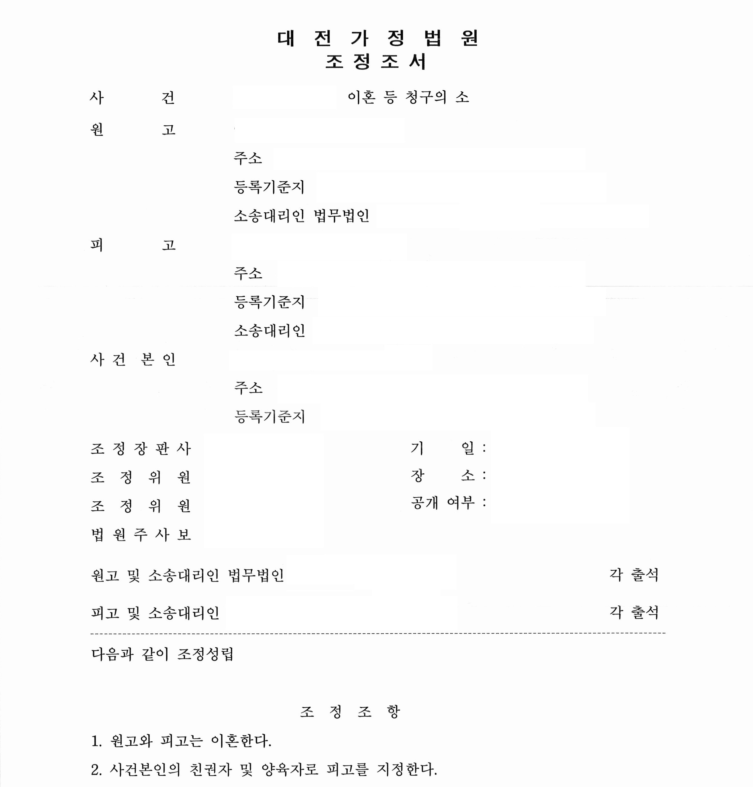
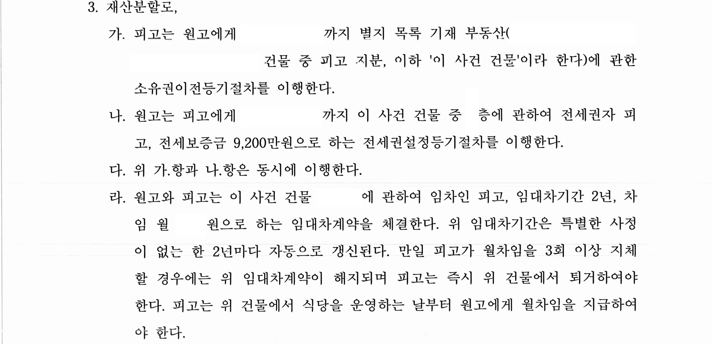

안녕하세요.
법무법인 글로리
대표 변호사 이아무 입니다.
오늘 소개해드릴 사례는
사실상 5:5의 비율로 분할될 재산에 대하여,
상대방의 상황과 요구를
충족시키는 제안을 함으로써,
원 피고 모두 만족하는 결과를 이끌어내었던
재산분할 방어 사례입니다.
원고와 피고는
1998년도에 혼인신고를 마친 법률상 부부로
슬하에 미성년 자녀 1명을 두고 있었습니다.
원고가 피고와 이혼을 하게 된 이유는
피고의 잦은 음주 습벽,
계속되는 외도, 외도 기간 동안
원고와 사건 본인을 방임한 점,
애정 상실과 가정의 무관심 등을 이유로
이혼 및 재산분할 소송을 진행하게 되었습니다.
1. 기본적인 사항
① 혼인 기간 : 약 20년
② 원고 : 개인사업자(투잡)
피고 : 식당 운영
③ 미성년 자녀 여부 : 1명
2. 분할의 대상이 된 재산

3. 판결 결과(조정 성립)
조정 결정으로 재산분할 명세표 상 피고 재산 중
부동산의 피고 지분 1/2을 원고가 이전 받고,
대신 위 부동산 N 층에 대하여
원고는 피고에게 전세권자 피고,
전세보증금 9천2백만 원으로 하는
전세를 내어주는 조건으로 조정이 성립되었습니다.


4. 위와 같은 결과가 나오게 된 원인
혼인 기간이 길고,
미성년 자녀의 친권 및 양육권자라
피고로 지정된 상황에서
원고는 양육비는 충분히 지급할 것이나,
재산에 대하여는 최대한 본인한테
유리한 결과를 원하였습니다.
여러 상정에 비추어 사실상 50% 비율로
분할될 가능성이 높았던 상황에서
사실상 원피고 공동재산의
전부에 해당하는 부동산을
원고가 모두 소유하는 결과가 나왔는데요,
저희는 피고가 부동산을 소유하기보다는
위 부동산에서 자녀를 양육하면서
식당 영업을 계속하길 원한다는 것을 파악하고,
위와 같은 제안을 했고
피고가 이를 받아들이면서 가능하게 됐는데요,
결과적으로
원고는 60% 정도에 해당하는 재산분할 비율로
방어에 성공하는 결과를 이끌어 냈습니다.
이 사건 조정 결정문은
다소 특이한 내용이 들어가 있는데요,
사실상 조정이 아닌 판결문으로는
위와 같은 내용을 받아내기가 어렵기 때문에
사건을 조정으로 끌고 가 위와 같은 결과를
받을 수 있었다는 점도 말씀드리고 싶네요~
tip) 때로는 융통성 있는 해결이 필요합니다.
많은 경험이 있는 재산분할 전문 변호사와
함께 하시길 권유 드립니다~